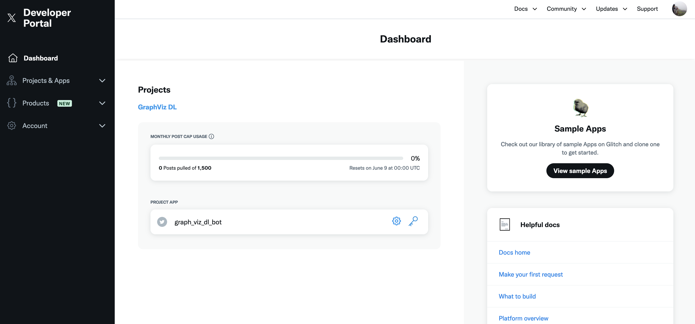
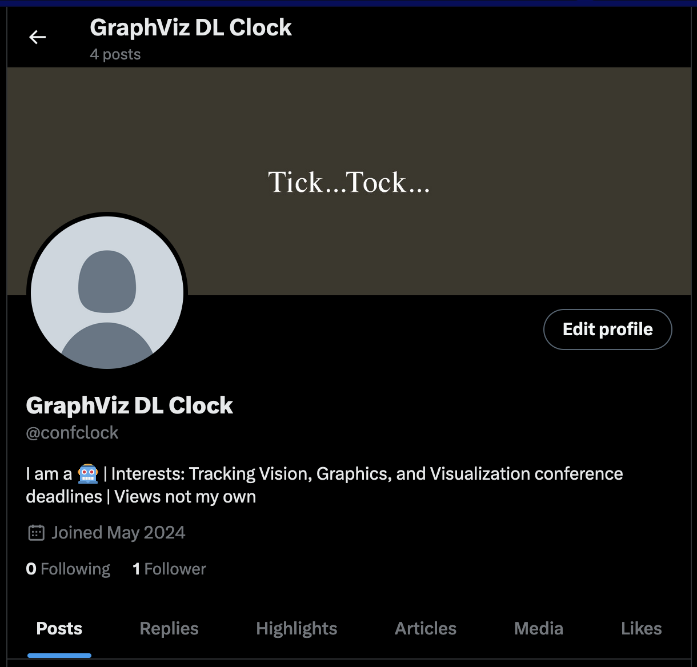
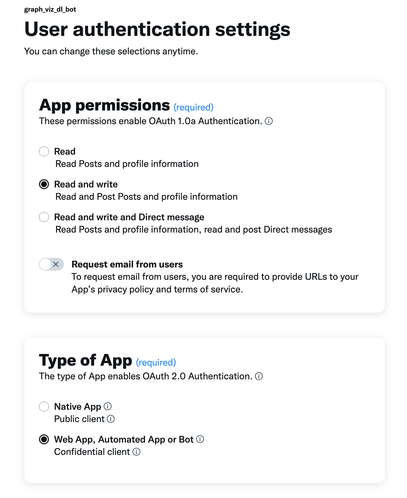
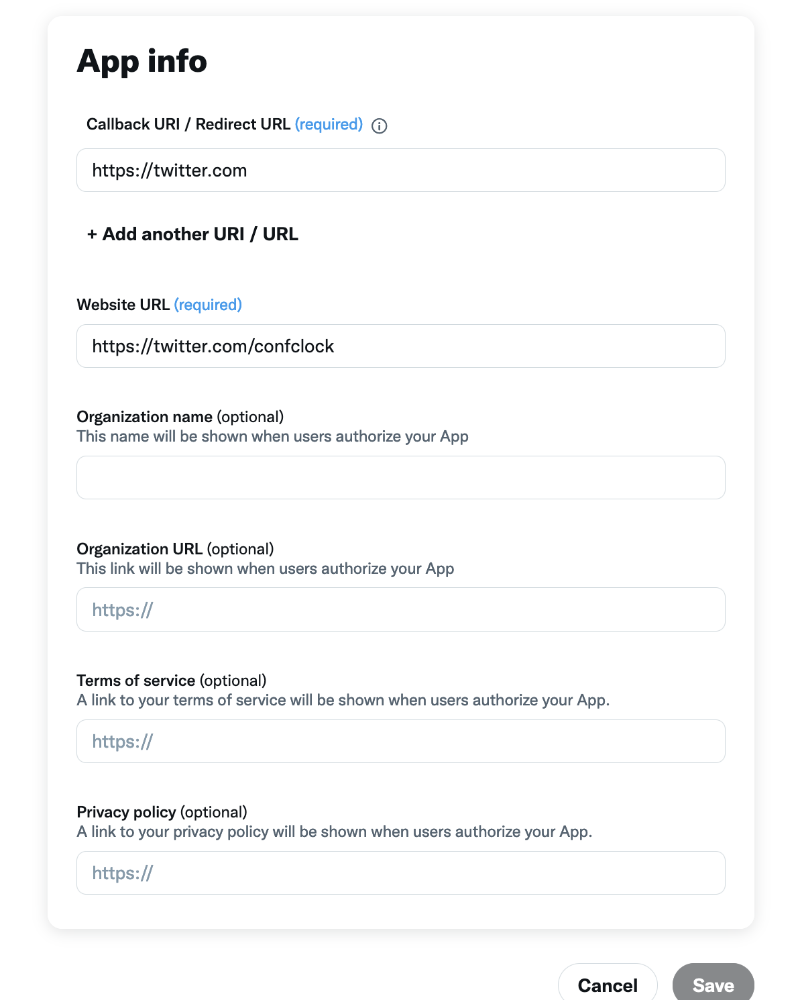
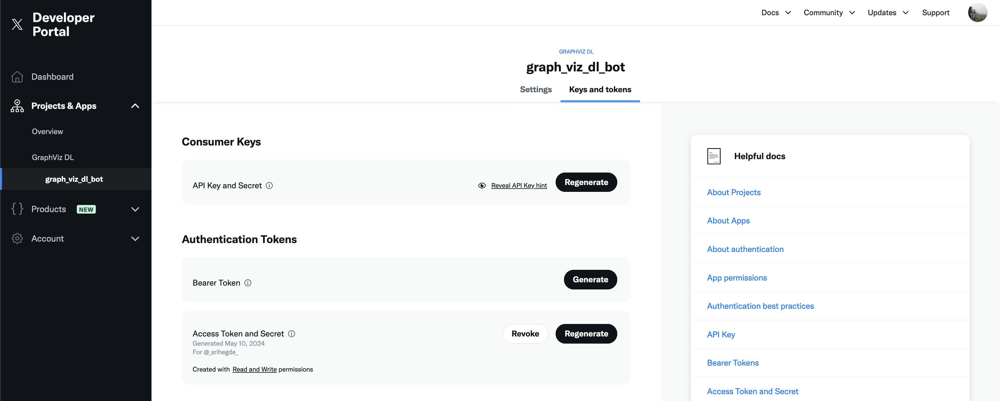

Never Miss a Deadline Again
Track Conference Deadlines with a Twitter Bot
Ever wished you could stay on top of conference deadlines without the constant calendar checking? Well, fret no more! Two missed deadlines later (yikes!), I knew I needed a better system for keeping track of them. Enter automation!
Today, in this article I’ll talk about the world of Twitter bots and how to build our very own conference deadline tracker bot using Python. Although there are handful of bot accounts on Twitter keeping track of conference deadlines, none of them are customized to my conference requirements in computer graphics, 3D vision, and visualization. Hence we will build our little bot friend who will scour the depths of our (shallow) data and tweet out those all-important deadlines, keeping us informed and stress-free. Let’s get started!
Shameless plug:
🔥Please do me a favor and follow @confclock on twitter for daily updates on graphics, vision, and visualization conference deadlines🔥
Prerequisites: What You’ll Need
- A free Twitter developer account (we’ll need to chat with Twitter through code)
- A little Python know-how (don’t worry, it’s beginner-friendly!)
Step 1: Sign Up and Get Access
First things first, head over to Twitter’s developer portal and snag yourself a free developer account. You might need to write a quick blurb about why you want to use their fancy Twitter APIs (think of it as your bot’s resume). Congratulations(if you got the access)! You can pull upto 1500 posts per month from Twitter if it is a free developer account.
Step 2: Project Time!
Once you’re in, you’ll see a new project with a random name. Give it a snazzy name that reflects your bot’s purpose (For e.g., “GraphViz DL” for our case or something drippy - “Deadline Slayer 3000”). There are two things here a project and an app. You can have projects in your account. Also you can have multiple apps under a project and each app servers a different purpose.

Step 3: Building Your Bot Account
Here comes the fun part: creating your bot account! You can refer to this nifty article that talks about creating a new twitter account by “hacking” the twitter login checker. Unfortunately, if none of that works for you then you’ll need a separate email address or phone number. So dust off an old email or grab a temporary phone number service.

Step 4: Talk Twitter Talk (Authentication!)
Now, we need to get our bot authorized to use Twitter’s superpowers. This involves generating some special codes or tokens and saving them securely. Think of them as secret handshakes that unlock Twitter’s features for your bot.
For this go to the Settings -> User Authentication Settings and update the app permissions, type of app, and the app info sections as per your requirements. I have used the following settings for my bot:
 
Now to generate and save the tokens, go to the Keys and Tokens tab in your Twitter developer account. You’ll see five keys here: API key, API secret key, Bearer token, Access token, and Access token secret. These are the secret handshakes we need to talk to Twitter (which uses 3-legged OAuth Flow behind the scenes).

Step 5: Python Power! Writing the Script
This is where the Python magic happens! We’ll write a script that uses a cool library called “tweepy” to chat with Twitter (with v2 endpoint APIs) and send out those deadline tweets. We’ll also set up a system to read conference information from a file (like a CSV spreadsheet).
Here’s a simple script to get you started:
import tweepy as tpy
import os
import csv
from datetime import datetime
from typing import Tuple, Dict
from dotenv import load_dotenv
# Authentication tokens
root_path = './'
load_dotenv(os.path.join(root_path, '.env'))
consumer_key = os.getenv("CONSUMER_KEY")
consumer_secret = os.getenv("CONSUMER_SECRET")
access_token = os.getenv("ACCESS_TOKEN")
access_token_secret = os.getenv("ACCESS_TOKEN_SECRET")
# Authenticate to Twitter
client = tpy.Client(consumer_key=consumer_key,
consumer_secret=consumer_secret,
access_token=access_token,
access_token_secret=access_token_secret)
# Tweet the message
client.create_tweet("Hello, Twitter!")
Don’t be a noob and store the keys in the script itself. Instead, use a .env file to store the keys (eg. COMSUMER_KEY=xxxx…xx, etc.) and load them into your script using load_dotenv module. This way, your keys stay secure and your code is modular.
Step 6: Tweeting from the Bot Account
Here’s the tricky bit. We’ve written a script that can tweet, but it’s currently tweeting from your main account. We need to link it to your bot account so the deadlines get posted there. There are a couple of ways to do this, and we’ll be using a method with a fancy name: OAuth 1.0a User Context.
This involves a bit of back-and-forth between your code and Twitter to get the necessary permissions. Long story short, you’ll need to generate an authentication link for your bot account to access the app’s functionality (remember app is in your main account), click on the link, and access the secret tokens of your bot account to be used in the app to tweet on bot’s behalf. Don’t worry, the instructions will guide you through it step-by-step.
Firstly, we need to generate the an authentication link for the bot account to access the app’s functionality. This can be done by using the following code:
consumer_key = os.getenv("CONSUMER_KEY")
consumer_secret = os.getenv("CONSUMER_SECRET")
oauth1_user_handler = tpy.OAuth1UserHandler(
consumer_key=consumer_key, consumer_secret=consumer_secret,
callback='https://twitter.com')
# The following link will ask you to authorize the app to use your account.
# Authorize and then you will be redirected to twitter.com with an oauth_verifier
# field in the URL. Pass that in the prompt of the next cell.
print(oauth1_user_handler.get_authorization_url(signin_with_twitter=True))
Here consumer key and secret are from the main account. This script spits the authentication link (which will look something like - https://twitter.com/home?oauth_token=<some_oauth_token>&oauth_verifier=<some_oauth_verifier>). Click on the link and authorize the app to use your account. You will be redirected to twitter.com with an oauth_verifier field in the URL. Copy that and pass it in the next cell below:
verifier = input('Verifier: ')
# Save the following tokens securely in .env file
bot1_access_token, bot1_access_token_secret = oauth1_user_handler.get_access_token(verifier)
# Authenticate to Twitter with the bot account
client = tpy.Client(consumer_key=consumer_key,
consumer_secret=consumer_secret,
access_token=bot1_access_token,
access_token_secret=bot1_access_token_secret)
Now you have the bot account’s access tokens. Save them securely in the .env file. Now you can tweet from the bot account using tweepy’s create_tweet() function. Also note that this approach requires too much manual intervention. You can automate this setup by creating some sort of web application that would parse the url and retrieve the oauth_verifier. But I did this because this is a one-time process and we are saving the required tokens of the bot account.
Step 7: Feeding the Beast (Conference Deadline Data)
Now that the tweeting part is figured out, we need to tell our bot what to tweet about! Create a file (like a CSV) containing conference names and deadlines. This will be the bot’s treasure trove of information.
I am storing my data in <conference_name, conference_deadline> format.The Python script will read this file, transform it into a tweet-worthy message, and send it out to the Twitterverse. Here’s a simple example of how you can read the data from a CSV file:
def extract_msg(msg_dict: Dict, ulimit: int=151) -> Tuple[str, Dict]:
msg = ''
delkeys = []
for cname, cinfo in msg_dict.items():
if cinfo['days'] == 0:
msg += f"{cname}: Today! Good Luck!\n"
elif cinfo['days'] > 0 and cinfo['days'] < ulimit:
msg += f"{cname}: {cinfo['days']} days\n"
elif cinfo['days'] < 0:
delkeys.append(cname)
for k in delkeys:
del msg_dict[k]
return msg, msg_dict
def get_deadlines_msg(csvfile: str) -> str:
with open(csvfile, newline='') as f:
reader = csv.reader(f)
deadlines = list(reader)
date_frmt = '%d-%m-%Y'
msg_dict = {}
for dl in deadlines:
cname = dl[0].strip()
date = dl[1].strip()
today = datetime.now().strftime(date_frmt)
days_left = datetime.strptime(date, date_frmt) - datetime.strptime(today, date_frmt)
msg_dict[cname] = {'date': date, 'days':days_left.days}
msg_dict = {k: v for k, v in sorted(msg_dict.items(), key=lambda item: item[1]['days'])}
msg, msg_dict = extract_msg(msg_dict)
# Remove the passed deadline from the csv file
with open(csvfile, 'w', newline='') as f:
writer = csv.writer(f)
for cname, days_left in msg_dict.items():
date = days_left['date']
writer.writerow([cname, date])
return msg
csvfile = 'deadlines.csv'
msg = get_deadlines_msg(csvfile)
Step 8: Scheduling the Tweets
We don’t want to babysit our bot, so let’s schedule it to tweet automatically every day. We’ll be using a cloud platform called PythonAnywhere to host our Python application. They offer a free plan that’s perfect for this.
Firstly, create an account on this site and setup the environment on the server. Free account gives you enough space and compute time to run this app couple of times a day. For this we will compile all the above code into a python script, called app.py, and upload it to the PythonAnywhere server along with .env and our CSV data file.
Next, create a virtual environment and install the required packages. You can do this by running the following commands in the bash console on the server:
mkvirtualenv dlbot --python=/usr/bin/python3.10 --seeder=pip
workon dlbot
pip install tweepy python-dotenv
Now, let’s schedule a task in the Tasks tab that runs our app.py script exactly once at a fixed time of the day. You can do this by adding a new task with the following task command:
workon dlbot; python /<your path to project folder>/app.py
That’s it - your bot is now ready to tweet out those all-important deadlines every day! You can check the logs to see if the tweets are being sent out as expected. If you want to test the bot, you can run the script manually by setting a close enough time to run the script.
Step 9: 🔥🔥 Bonus Level 🔥🔥 - Automating Deadline Gathering
(For the super-ambitious coders) Here is a challenge! Imagine a world where your bot finds conference deadlines all by itself! We can explore using a fancy Large Language Models (LLMs) to scrape conference websites and extract deadlines. This is some next-level bot building!
Hint: You can use tools like Tavily (https://tavily.com) which run over ChatGPT-4.0 APIs to produce detailed research reports given a task. You can prompt engineer the model to extract deadlines from the conference websites effectively.
If you made it till here, you are awesome! Now check out (and follow 🙏🙏🙏) @confclock on twitter and see what it can do.
Peace out! 🤖🚀
Resources:
Now if you are thinking about where to start, do not worry. I have got you covered! Here is the link to my GitHub repository where you can find all the code used in this blog (and more).
The world of Twitter bots can be a bit overwhelming, so here are some helpful resources to guide you on your journey:
- While a tad outdated, the core concepts are still useful
- Useful discussion 1
- Useful discussion 2
- Schedule tasks on PythonAnywhere
- Youtube tutorial
With a little dedication and these handy steps, you’ll be well on your way to building your very own conference deadline tracking Twitter bot. No more scrambling to meet deadlines – your bot will be your hero!